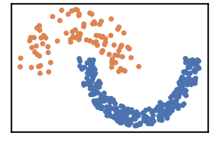
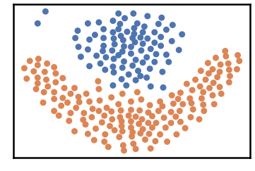
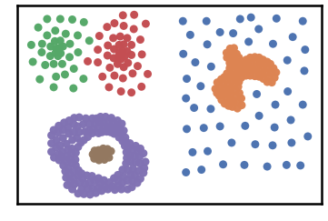
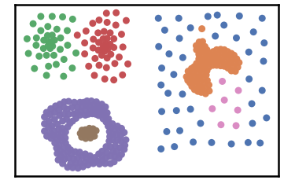
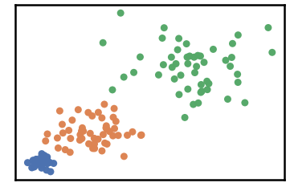
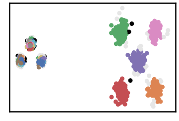
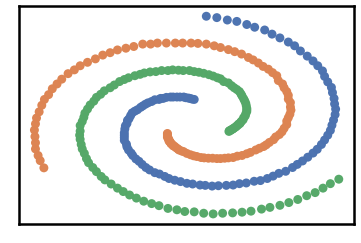
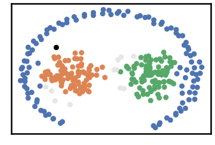
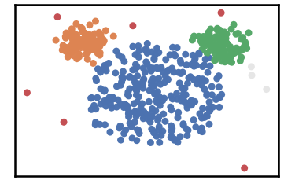

<!DOCTYPE html>
<html class="writer-html5" lang="en" >
<head>
  <meta charset="utf-8" /><meta name="generator" content="Docutils 0.17.1: http://docutils.sourceforge.net/" />

  <meta name="viewport" content="width=device-width, initial-scale=1.0" />
  <title>2D Shapes Datasets &mdash; DenMune 0.1 documentation</title>
      <link rel="stylesheet" href="../_static/pygments.css" type="text/css" />
      <link rel="stylesheet" href="../_static/css/theme.css" type="text/css" />
  <!--[if lt IE 9]>
    <script src="../_static/js/html5shiv.min.js"></script>
  <![endif]-->
  
        <script data-url_root="../" id="documentation_options" src="../_static/documentation_options.js"></script>
        <script src="../_static/jquery.js"></script>
        <script src="../_static/underscore.js"></script>
        <script src="../_static/doctools.js"></script>
    <script src="../_static/js/theme.js"></script>
    <link rel="index" title="Index" href="../genindex.html" />
    <link rel="search" title="Search" href="../search.html" />
    <link rel="next" title="MNIST Dataset" href="MNIST_dataset.html" />
    <link rel="prev" title="Chameleon Dataset" href="chameleon_datasets.html" /> 
</head>

<body class="wy-body-for-nav"> 
  <div class="wy-grid-for-nav">
    <nav data-toggle="wy-nav-shift" class="wy-nav-side">
      <div class="wy-side-scroll">
        <div class="wy-side-nav-search" >
            <a href="../index.html" class="icon icon-home"> DenMune
          </a>
              <div class="version">
                0.1.0
              </div>
<div role="search">
  <form id="rtd-search-form" class="wy-form" action="../search.html" method="get">
    <input type="text" name="q" placeholder="Search docs" />
    <input type="hidden" name="check_keywords" value="yes" />
    <input type="hidden" name="area" value="default" />
  </form>
</div>
        </div><div class="wy-menu wy-menu-vertical" data-spy="affix" role="navigation" aria-label="Navigation menu">
              <ul>
<li class="toctree-l1"><a class="reference internal" href="../README.html">DenMune: A density-peak clustering algorithm</a></li>
<li class="toctree-l1"><a class="reference internal" href="../README.html#installation-and-usage">Installation and Usage</a></li>
<li class="toctree-l1"><a class="reference internal" href="../README.html#loading-data">Loading data</a></li>
<li class="toctree-l1"><a class="reference internal" href="../README.html#algorithm-s-parameters">Algorithm’s Parameters</a></li>
<li class="toctree-l1"><a class="reference internal" href="../README.html#features">Features</a></li>
<li class="toctree-l1"><a class="reference internal" href="../README.html#how-to-run-and-test">How to Run and Test</a></li>
<li class="toctree-l1"><a class="reference internal" href="../README.html#how-to-cite">How to cite</a></li>
</ul>
<ul class="current">
<li class="toctree-l1"><a class="reference internal" href="iris_dataset.html">Iris Dataset</a></li>
<li class="toctree-l1"><a class="reference internal" href="chameleon_datasets.html">Chameleon Dataset</a></li>
<li class="toctree-l1 current"><a class="current reference internal" href="#">2D Shapes Datasets</a></li>
<li class="toctree-l1"><a class="reference internal" href="MNIST_dataset.html">MNIST Dataset</a></li>
</ul>
<ul>
<li class="toctree-l1"><a class="reference internal" href="../characteristics/noise_detection.html">Noise Detection</a></li>
<li class="toctree-l1"><a class="reference internal" href="../characteristics/clustering_propagation.html">Clustering Propagation</a></li>
<li class="toctree-l1"><a class="reference internal" href="../characteristics/clustering_propagation_snapshots.html">Clustering Propagation Snapshots</a></li>
<li class="toctree-l1"><a class="reference internal" href="../characteristics/scalability_and_speed.html">Scalability</a></li>
<li class="toctree-l1"><a class="reference internal" href="../characteristics/stability_vs_knn.html">Stability</a></li>
<li class="toctree-l1"><a class="reference internal" href="../characteristics/k_nearest_evolution.html">K-nearest Neighbor Evolution</a></li>
</ul>
<ul>
<li class="toctree-l1"><a class="reference internal" href="../kaggle/validation.html">Validate Your Results</a></li>
<li class="toctree-l1"><a class="reference internal" href="../kaggle/training_MNIST.html">Trining MNIST Dataset</a></li>
<li class="toctree-l1"><a class="reference internal" href="../kaggle/Get_97_by_training_MNIST_dataset.html">Become a Kaggler: Get 97% on MNIST Dataset</a></li>
</ul>

        </div>
      </div>
    </nav>

    <section data-toggle="wy-nav-shift" class="wy-nav-content-wrap"><nav class="wy-nav-top" aria-label="Mobile navigation menu" >
          <i data-toggle="wy-nav-top" class="fa fa-bars"></i>
          <a href="../index.html">DenMune</a>
      </nav>

      <div class="wy-nav-content">
        <div class="rst-content">
          <div role="navigation" aria-label="Page navigation">
  <ul class="wy-breadcrumbs">
      <li><a href="../index.html" class="icon icon-home"></a> &raquo;</li>
      <li>2D Shapes Datasets</li>
      <li class="wy-breadcrumbs-aside">
            <a href="../_sources/examples/2D_shapes_datasets.rst.txt" rel="nofollow"> View page source</a>
      </li>
  </ul>
  <hr/>
</div>
          <div role="main" class="document" itemscope="itemscope" itemtype="http://schema.org/Article">
           <div itemprop="articleBody">
             
  <section id="d-shapes-datasets">
<h1>2D Shapes Datasets<a class="headerlink" href="#d-shapes-datasets" title="Permalink to this headline"></a></h1>
<div class="highlight-python notranslate"><div class="highlight"><pre><span></span><span class="kn">import</span> <span class="nn">pandas</span> <span class="k">as</span> <span class="nn">pd</span>
<span class="kn">import</span> <span class="nn">time</span>
<span class="kn">import</span> <span class="nn">os.path</span>

<span class="kn">import</span> <span class="nn">warnings</span>
<span class="n">warnings</span><span class="o">.</span><span class="n">filterwarnings</span><span class="p">(</span><span class="s1">&#39;ignore&#39;</span><span class="p">)</span>
</pre></div>
</div>
<div class="highlight-python notranslate"><div class="highlight"><pre><span></span># install DenMune clustering algorithm using pip command from the offecial Python repository, PyPi
# from https://pypi.org/project/denmune/
!pip install denmune

# then import it
from denmune import DenMune
</pre></div>
</div>
<div class="highlight-python notranslate"><div class="highlight"><pre><span></span># clone datasets from our repository datasets
if not os.path.exists(&#39;datasets&#39;):
  !git clone https://github.com/egy1st/datasets
</pre></div>
</div>
<div class="highlight-default notranslate"><div class="highlight"><pre><span></span>Cloning into &#39;datasets&#39;...
remote: Enumerating objects: 52, done.
remote: Counting objects: 100% (52/52), done.
remote: Compressing objects: 100% (43/43), done.
remote: Total 52 (delta 8), reused 49 (delta 8), pack-reused 0
Unpacking objects: 100% (52/52), done.
Checking out files: 100% (20/20), done.
</pre></div>
</div>
<div class="highlight-python notranslate"><div class="highlight"><pre><span></span><span class="n">data_path</span> <span class="o">=</span> <span class="s1">&#39;datasets/denmune/shapes/&#39;</span>
<span class="n">datasets</span> <span class="o">=</span> <span class="p">{</span><span class="s2">&quot;aggregation&quot;</span><span class="p">:</span> <span class="mi">6</span><span class="p">,</span> <span class="s2">&quot;jain&quot;</span><span class="p">:</span> <span class="mi">15</span><span class="p">,</span> <span class="s2">&quot;flame&quot;</span><span class="p">:</span> <span class="mi">8</span><span class="p">,</span> <span class="s2">&quot;compound&quot;</span><span class="p">:</span> <span class="mi">13</span><span class="p">,</span> <span class="s2">&quot;varydensity&quot;</span><span class="p">:</span> <span class="mi">23</span><span class="p">,</span>
            <span class="s2">&quot;unbalance&quot;</span><span class="p">:</span> <span class="mi">8</span><span class="p">,</span> <span class="s2">&quot;spiral&quot;</span><span class="p">:</span> <span class="mi">6</span><span class="p">,</span> <span class="s2">&quot;pathbased&quot;</span><span class="p">:</span> <span class="mi">6</span><span class="p">,</span> <span class="s2">&quot;mouse&quot;</span><span class="p">:</span> <span class="mi">11</span><span class="p">}</span>

<span class="k">for</span> <span class="n">dataset</span> <span class="ow">in</span> <span class="n">datasets</span><span class="p">:</span>


  <span class="n">data_file</span> <span class="o">=</span> <span class="n">data_path</span> <span class="o">+</span> <span class="n">dataset</span> <span class="o">+</span> <span class="s1">&#39;.csv&#39;</span>
  <span class="n">X_train</span> <span class="o">=</span> <span class="n">pd</span><span class="o">.</span><span class="n">read_csv</span><span class="p">(</span><span class="n">data_file</span><span class="p">,</span> <span class="n">sep</span><span class="o">=</span><span class="s1">&#39;,&#39;</span><span class="p">,</span> <span class="n">header</span><span class="o">=</span><span class="kc">None</span><span class="p">)</span>
  <span class="n">y_train</span> <span class="o">=</span> <span class="n">X_train</span><span class="o">.</span><span class="n">iloc</span><span class="p">[:,</span> <span class="o">-</span><span class="mi">1</span><span class="p">]</span>
  <span class="n">X_train</span> <span class="o">=</span> <span class="n">X_train</span><span class="o">.</span><span class="n">drop</span><span class="p">(</span><span class="n">X_train</span><span class="o">.</span><span class="n">columns</span><span class="p">[</span><span class="o">-</span><span class="mi">1</span><span class="p">],</span> <span class="n">axis</span><span class="o">=</span><span class="mi">1</span><span class="p">)</span>

  <span class="nb">print</span> <span class="p">(</span><span class="s2">&quot;Dataset:&quot;</span><span class="p">,</span> <span class="n">dataset</span><span class="p">)</span>
  <span class="n">dm</span> <span class="o">=</span> <span class="n">DenMune</span><span class="p">(</span><span class="n">train_data</span><span class="o">=</span><span class="n">X_train</span><span class="p">,</span>
              <span class="n">train_truth</span><span class="o">=</span><span class="n">y_train</span><span class="p">,</span>
              <span class="n">k_nearest</span><span class="o">=</span><span class="n">datasets</span><span class="p">[</span><span class="n">dataset</span><span class="p">],</span>
              <span class="n">rgn_tsne</span><span class="o">=</span><span class="kc">False</span><span class="p">)</span>

  <span class="n">labels</span><span class="p">,</span> <span class="n">validity</span> <span class="o">=</span> <span class="n">dm</span><span class="o">.</span><span class="n">fit_predict</span><span class="p">(</span><span class="n">show_noise</span><span class="o">=</span><span class="kc">True</span><span class="p">,</span> <span class="n">show_analyzer</span><span class="o">=</span><span class="kc">True</span><span class="p">)</span>
</pre></div>
</div>
<div class="highlight-default notranslate"><div class="highlight"><pre><span></span><span class="n">Dataset</span><span class="p">:</span> <span class="n">aggregation</span>
<span class="n">Plotting</span> <span class="n">dataset</span> <span class="n">Groundtruth</span>
</pre></div>
</div>

<div class="highlight-default notranslate"><div class="highlight"><pre><span></span><span class="n">Plotting</span> <span class="n">train</span> <span class="n">data</span>
</pre></div>
</div>

<div class="highlight-default notranslate"><div class="highlight"><pre><span></span>Validating train data
├── exec_time
│   ├── DenMune: 0.17
│   ├── NGT: 0.016
│   └── t_SNE: 0
├── n_clusters
│   ├── actual: 7
│   └── detected: 7
├── n_points
│   ├── dim: 2
│   ├── noise
│   │   ├── type-1: 0
│   │   └── type-2: 0
│   ├── plot_size: 788
│   ├── size: 788
│   ├── strong: 492
│   └── weak
│       ├── all: 296
│       ├── failed to merge: 0
│       └── succeeded to merge: 296
└── validity
    └── train
        ├── ACC: 785
        ├── AMI: 0.988
        ├── ARI: 0.993
        ├── F1: 0.996
        ├── NMI: 0.988
        ├── completeness: 0.987
        └── homogeneity: 0.989

Dataset: jain
Plotting dataset Groundtruth
</pre></div>
</div>

<div class="highlight-default notranslate"><div class="highlight"><pre><span></span><span class="n">Plotting</span> <span class="n">train</span> <span class="n">data</span>
</pre></div>
</div>

<div class="highlight-default notranslate"><div class="highlight"><pre><span></span>Validating train data
├── exec_time
│   ├── DenMune: 0.097
│   ├── NGT: 0.01
│   └── t_SNE: 0
├── n_clusters
│   ├── actual: 2
│   └── detected: 2
├── n_points
│   ├── dim: 2
│   ├── noise
│   │   ├── type-1: 0
│   │   └── type-2: 0
│   ├── plot_size: 373
│   ├── size: 373
│   ├── strong: 198
│   └── weak
│       ├── all: 175
│       ├── failed to merge: 0
│       └── succeeded to merge: 175
└── validity
    └── train
        ├── ACC: 373
        ├── AMI: 1.0
        ├── ARI: 1.0
        ├── F1: 1.0
        ├── NMI: 1.0
        ├── completeness: 1.0
        └── homogeneity: 1.0

Dataset: flame
Plotting dataset Groundtruth
</pre></div>
</div>

<div class="highlight-default notranslate"><div class="highlight"><pre><span></span><span class="n">Plotting</span> <span class="n">train</span> <span class="n">data</span>
</pre></div>
</div>

<div class="highlight-default notranslate"><div class="highlight"><pre><span></span>Validating train data
├── exec_time
│   ├── DenMune: 0.059
│   ├── NGT: 0.01
│   └── t_SNE: 0
├── n_clusters
│   ├── actual: 2
│   └── detected: 2
├── n_points
│   ├── dim: 2
│   ├── noise
│   │   ├── type-1: 0
│   │   └── type-2: 0
│   ├── plot_size: 240
│   ├── size: 240
│   ├── strong: 150
│   └── weak
│       ├── all: 90
│       ├── failed to merge: 0
│       └── succeeded to merge: 90
└── validity
    └── train
        ├── ACC: 240
        ├── AMI: 1.0
        ├── ARI: 1.0
        ├── F1: 1.0
        ├── NMI: 1.0
        ├── completeness: 1.0
        └── homogeneity: 1.0

Dataset: compound
Plotting dataset Groundtruth
</pre></div>
</div>

<div class="highlight-default notranslate"><div class="highlight"><pre><span></span><span class="n">Plotting</span> <span class="n">train</span> <span class="n">data</span>
</pre></div>
</div>

<div class="highlight-default notranslate"><div class="highlight"><pre><span></span>Validating train data
├── exec_time
│   ├── DenMune: 0.077
│   ├── NGT: 0.013
│   └── t_SNE: 0
├── n_clusters
│   ├── actual: 6
│   └── detected: 7
├── n_points
│   ├── dim: 2
│   ├── noise
│   │   ├── type-1: 0
│   │   └── type-2: 0
│   ├── plot_size: 399
│   ├── size: 399
│   ├── strong: 218
│   └── weak
│       ├── all: 181
│       ├── failed to merge: 0
│       └── succeeded to merge: 181
└── validity
    └── train
        ├── ACC: 389
        ├── AMI: 0.96
        ├── ARI: 0.98
        ├── F1: 0.983
        ├── NMI: 0.961
        ├── completeness: 0.947
        └── homogeneity: 0.976

Dataset: varydensity
Plotting dataset Groundtruth
</pre></div>
</div>

<div class="highlight-default notranslate"><div class="highlight"><pre><span></span><span class="n">Plotting</span> <span class="n">train</span> <span class="n">data</span>
</pre></div>
</div>

<div class="highlight-default notranslate"><div class="highlight"><pre><span></span>Validating train data
├── exec_time
│   ├── DenMune: 0.035
│   ├── NGT: 0.004
│   └── t_SNE: 0
├── n_clusters
│   ├── actual: 3
│   └── detected: 3
├── n_points
│   ├── dim: 2
│   ├── noise
│   │   ├── type-1: 0
│   │   └── type-2: 0
│   ├── plot_size: 150
│   ├── size: 150
│   ├── strong: 76
│   └── weak
│       ├── all: 74
│       ├── failed to merge: 0
│       └── succeeded to merge: 74
└── validity
    └── train
        ├── ACC: 150
        ├── AMI: 1.0
        ├── ARI: 1.0
        ├── F1: 1.0
        ├── NMI: 1.0
        ├── completeness: 1.0
        └── homogeneity: 1.0

Dataset: unbalance
Plotting dataset Groundtruth
</pre></div>
</div>

<div class="highlight-default notranslate"><div class="highlight"><pre><span></span><span class="n">Plotting</span> <span class="n">train</span> <span class="n">data</span>
</pre></div>
</div>

<div class="highlight-default notranslate"><div class="highlight"><pre><span></span>Validating train data
├── exec_time
│   ├── DenMune: 1.028
│   ├── NGT: 0.123
│   └── t_SNE: 0
├── n_clusters
│   ├── actual: 8
│   └── detected: 91
├── n_points
│   ├── dim: 2
│   ├── noise
│   │   ├── type-1: 21
│   │   └── type-2: 127
│   ├── plot_size: 6500
│   ├── size: 6500
│   ├── strong: 3910
│   └── weak
│       ├── all: 2590
│       ├── failed to merge: 127
│       └── succeeded to merge: 2463
└── validity
    └── train
        ├── ACC: 2562
        ├── AMI: 0.534
        ├── ARI: 0.272
        ├── F1: 0.519
        ├── NMI: 0.542
        ├── completeness: 0.376
        └── homogeneity: 0.974

Dataset: spiral
Plotting dataset Groundtruth
</pre></div>
</div>

<div class="highlight-default notranslate"><div class="highlight"><pre><span></span><span class="n">Plotting</span> <span class="n">train</span> <span class="n">data</span>
</pre></div>
</div>

<div class="highlight-default notranslate"><div class="highlight"><pre><span></span>Validating train data
├── exec_time
│   ├── DenMune: 0.036
│   ├── NGT: 0.003
│   └── t_SNE: 0
├── n_clusters
│   ├── actual: 3
│   └── detected: 4
├── n_points
│   ├── dim: 2
│   ├── noise
│   │   ├── type-1: 0
│   │   └── type-2: 0
│   ├── plot_size: 312
│   ├── size: 312
│   ├── strong: 285
│   └── weak
│       ├── all: 27
│       ├── failed to merge: 0
│       └── succeeded to merge: 27
└── validity
    └── train
        ├── ACC: 293
        ├── AMI: 0.932
        ├── ARI: 0.922
        ├── F1: 0.967
        ├── NMI: 0.932
        ├── completeness: 0.873
        └── homogeneity: 1.0

Dataset: pathbased
Plotting dataset Groundtruth
</pre></div>
</div>

<div class="highlight-default notranslate"><div class="highlight"><pre><span></span><span class="n">Plotting</span> <span class="n">train</span> <span class="n">data</span>
</pre></div>
</div>

<div class="highlight-default notranslate"><div class="highlight"><pre><span></span>Validating train data
├── exec_time
│   ├── DenMune: 0.072
│   ├── NGT: 0.007
│   └── t_SNE: 0
├── n_clusters
│   ├── actual: 3
│   └── detected: 3
├── n_points
│   ├── dim: 2
│   ├── noise
│   │   ├── type-1: 1
│   │   └── type-2: 11
│   ├── plot_size: 300
│   ├── size: 300
│   ├── strong: 198
│   └── weak
│       ├── all: 102
│       ├── failed to merge: 11
│       └── succeeded to merge: 91
└── validity
    └── train
        ├── ACC: 286
        ├── AMI: 0.889
        ├── ARI: 0.924
        ├── F1: 0.972
        ├── NMI: 0.89
        ├── completeness: 0.842
        └── homogeneity: 0.943

Dataset: mouse
Plotting dataset Groundtruth
</pre></div>
</div>

<div class="highlight-default notranslate"><div class="highlight"><pre><span></span><span class="n">Plotting</span> <span class="n">train</span> <span class="n">data</span>
</pre></div>
</div>

<div class="highlight-default notranslate"><div class="highlight"><pre><span></span>Validating train data
├── exec_time
│   ├── DenMune: 0.082
│   ├── NGT: 0.015
│   └── t_SNE: 0
├── n_clusters
│   ├── actual: 4
│   └── detected: 4
├── n_points
│   ├── dim: 2
│   ├── noise
│   │   ├── type-1: 0
│   │   └── type-2: 3
│   ├── plot_size: 500
│   ├── size: 500
│   ├── strong: 302
│   └── weak
│       ├── all: 198
│       ├── failed to merge: 3
│       └── succeeded to merge: 195
└── validity
    └── train
        ├── ACC: 492
        ├── AMI: 0.949
        ├── ARI: 0.972
        ├── F1: 0.986
        ├── NMI: 0.949
        ├── completeness: 0.95
        └── homogeneity: 0.948
</pre></div>
</div>
</section>


           </div>
          </div>
          <footer><div class="rst-footer-buttons" role="navigation" aria-label="Footer">
        <a href="chameleon_datasets.html" class="btn btn-neutral float-left" title="Chameleon Dataset" accesskey="p" rel="prev"><span class="fa fa-arrow-circle-left" aria-hidden="true"></span> Previous</a>
        <a href="MNIST_dataset.html" class="btn btn-neutral float-right" title="MNIST Dataset" accesskey="n" rel="next">Next <span class="fa fa-arrow-circle-right" aria-hidden="true"></span></a>
    </div>

  <hr/>

  <div role="contentinfo">
    <p>&#169; Copyright 2021, Mohamed Abbas.</p>
  </div>

  Built with <a href="https://www.sphinx-doc.org/">Sphinx</a> using a
    <a href="https://github.com/readthedocs/sphinx_rtd_theme">theme</a>
    provided by <a href="https://readthedocs.org">Read the Docs</a>.
   

</footer>
        </div>
      </div>
    </section>
  </div>
  <script>
      jQuery(function () {
          SphinxRtdTheme.Navigation.enable(true);
      });
  </script> 

</body>
</html>